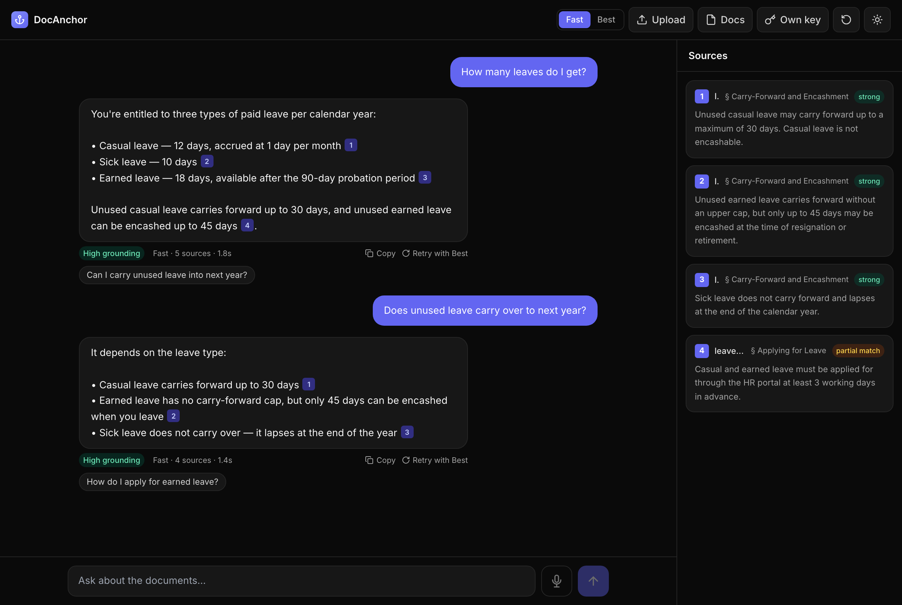

DocAnchor
Live · docanchor.onrender.com
RAG · Document assistant
Ask your documents.
Get answers with receipts.
A grounded assistant that answers only from your documents — every claim cited to its source, nothing invented.
Strictly grounded
Never invents — says “I couldn’t find that” instead of guessing
[1]
Inline citations
Every claim links to the exact source passage
Any documents
PDF, DOCX, TXT, MD — or paste a URL
Conversational
Greetings, follow-ups, and honest grey-area hedging
docanchor.onrender.com
